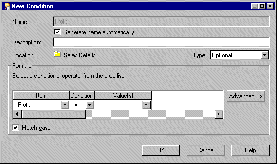
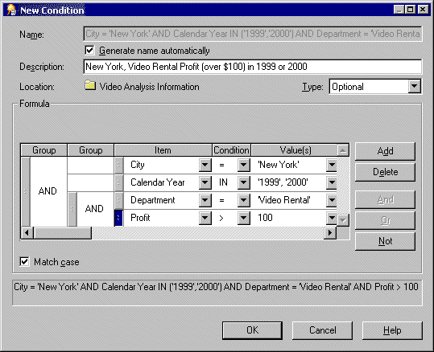
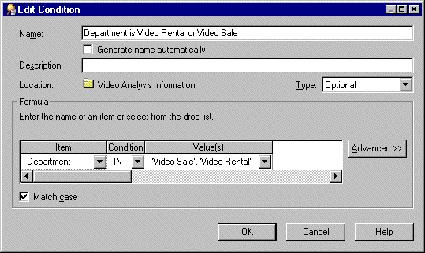
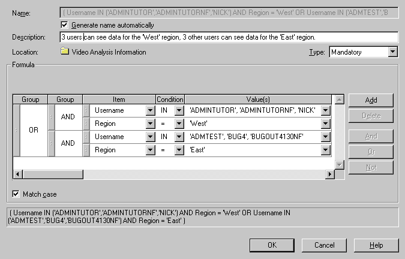

10g (9.0.4)
Part Number B10270-01
Library |
Contents |
Index |
| Oracle Discoverer Administrator Administration Guide (Online Help) 10g (9.0.4) Part Number B10270-01 |
|
This chapter explains how to implement conditions using Discoverer Administrator, and contains the following topics:
Conditions filter worksheet data, enabling Discoverer end users to analyze only the data they are interested in. For example, you might want to give Discoverer end users access to data for 2001, but not 1999 or 2000.
You also use conditions to restrict access to sensitive data. By imposing mandatory conditions, only non-sensitive data is made available to Discoverer users (see "What are the different types of condition?"). You can make sure that Discoverer end users only see the data that you want them to see.
As a Discoverer Administrator, you can anticipate commonly used conditions and make them available to Discoverer end users so they can apply them in worksheets. This enables Discoverer end users to work efficiently.
Conditions are categorized as follows:
display data where year = 2001 AND quarter = 1 AND region = south.
display data where year = 2001 AND (region = north OR region = south)
here, the OR clause is nested within the AND clause.
display data where year = 2001 AND quarter = 1 AND region = south' AND (region = north OR region = south)
here as in the nested example, the OR clause is nested within the AND clause)
As an alternative to creating advanced conditions, you might want to create two or more single conditions and apply them at the same time. This enables Discoverer users to be more selective about which parts of the condition they use.
Note: There can be subtle differences between applying advanced conditions and equivalent multiple single conditions (for more information, see Oracle Application Server Discoverer Plus User's Guide).
Conditions work in Discoverer by matching condition statements against worksheet data so that:
For example, you might want to limit the display of data to the last two years of sales. Or, you might want to see the data for only two types of sales items. Each of these tasks involves filtering the data to find information that meets the conditions.
There are two types of condition:
You create mandatory and optional conditions in the same way. However, note the following:
For example, you might want to assign a mandatory condition to sales data for regional sales managers, limiting their view of sales to the region for which each manager is responsible.
For example, a Vice President responsible for all sales regions should be able to see all of the sales data, and also be able to apply conditions to see sales data relating to specific sales regions.
The table below shows further differences between mandatory and optional conditions:
You create a simple condition when you want Discoverer end users to filter worksheets in a new way. You add the condition to a folder so that Discoverer end users can apply the condition when using workbooks based on the folder.
For example, you might want to create an optional condition that filters data to display results for the current year, because Discoverer end users might only be interested in data for that year. Or, you might want to restrict access to sensitive data by imposing a mandatory condition on a particular area of data (see "What are the different types of condition?").
To create a single condition:

Note: If you choose Insert | Condition without first selecting a folder or item, Discoverer prompts you to choose a folder or item before displaying the dialog.
Note: By default, Discoverer Administrator creates a default condition name for the condition, based on the condition itself. However, you can specify your own name for the condition.
The text entered here is displayed when the condition is edited in Discoverer Administrator or when the condition is highlighted by end users.
The new condition is displayed on the "Workarea: Data tab". When Discoverer users access this business area, they will see this condition item in a folder. Note that seeing a condition in the folder does not mean that the folder is filtered. The end user must select and use the condition in a workbook.
Advanced conditions are conditions that contain more than one condition statement. For example, if you want to filter data for the city New York in either 1999 or 2000, you might create the condition City = New York AND (Year = 1999 or 2000). You could then nest an existing condition within the existing advanced condition. For example, where Department = Video AND Rental Profit > $100. In Discoverer, it is easy to add as many condition statements as you want, enabling you to build powerful condition items.
To create an advanced condition:

Discoverer adds Insert buttons for Add, And and Or. You use these buttons to create the advanced condition.
c. Specify the condition and value for the new condition statement.
d. Specify how you want to combine the condition statements.
Note: You can use the handles next to each condition statement to highlight a condition statement and carry out the following actions:
Note: If you reposition a condition statement, it can affect the order in which the condition statement is applied within the advanced condition (i.e. nested condition statements are applied first).
The new condition is displayed on the "Workarea: Data tab". When Discoverer users access this business area, they will see this condition item in the business area folder.
You edit a condition to change the way that it behaves. For example, you might want to:
To edit a condition:

The updated condition is displayed on the "Workarea: Data tab".
You edit a condition's properties to change the way that it behaves, or change its identifier (for more information, see Chapter 3, "What are identifiers?"), which is a unique Discoverer identification label. You can also change the way that a condition behaves by editing the condition itself (for more information, see "How to edit conditions").
To edit condition properties:
The "Workarea: Data tab" is updated to reflect any changes made to the condition.
You delete a condition when you want to remove it permanently from the business area. For example, you might have previously filtered data relating to the year 2000, and would now like Discoverer users to access data relating to all available years.
To delete a condition:
The condition is removed from the business area.
The following examples show how conditions are used in Discoverer Administrator.
To create a condition that returns only data for the year 2002, enter the following in the Formula area of the New Condition dialog:
| Item | Condition | Value |
|---|---|---|
|
Year |
= |
2002 |
To create a condition that only returns the sales in the last seven days (using the calculated item, "Transaction Age (in Days)"), enter the following in the Formula area of the New Condition dialog:
| Item | Condition | Value |
|---|---|---|
|
Transaction Age (in days) |
< |
7 |
Note that the Transaction Age calculated item has the following formula
FLOOR (SYSDATE - Transaction Date)
This type of condition is sometimes described as a "rolling window" condition because the "window" of rows it returns changes from day to day.
To create a condition that only returns shipments made in quarter 3 (Q3) regardless of year (using the calculated item, 'Ship Quarter'), enter the following in the Formula area of the New Condition dialog:
| Item | Condition | Value |
|---|---|---|
|
Ship Quarter |
= |
'Q3' |
Note that the Ship Quarter calculated item has the following formula:
EUL_DATE_TRUNC(Ship Date, "Q")
If you define an outer join between two tables, make sure you are aware of how conditions (filters) and the DisableAutoOuterJoinsOnFilters Discoverer registry setting can combine to affect the rows of data returned by an end user query.
You define an outer join between two tables to display:
For example, you might want to display:
In SQL, the outer join is signified by the plus (+) symbol.
Discoverer includes outer joins in SQL:
For more information, see the "Join Wizard: Step 2 dialog".
For example, Discoverer automatically creates outer joins in the SQL for end user queries that contain conditions.
When running a query that contains a condition, users will sometimes want the results to:
The DisableAutoOuterJoinsOnFilters registry setting enables you to disable the use of automatically generated outer joins when conditions are used in end user queries. The table below summarizes the examples that follow:
| Example No. | Condition applied? | Value of DisableAutoOuterJoinsOnFilters | All values displayed |
|---|---|---|---|
|
Example 1 |
No |
0 or 1 |
Yes |
|
Example 2 |
Yes |
0 |
No |
|
Example 3 |
Yes |
1 |
Yes |
The following examples illustrate how outer joins, conditions, and the value of the DisableAutoOuterJoinsOnFilters registry setting can affect the rows of data returned from an end user query.
For more information about Discoverer registry settings, see Chapter 20, "Discoverer registry settings".
This example illustrates the results returned when you execute a query against two tables, where the master and detail tables are joined with an outer join.
Discoverer displays:
The query is defined using the following SQL statement, where the outer join is signified by the plus (+) symbol:
select dname, ename, job from dept, emp where dept.deptno = emp.deptno(+);
| DNAME | ENAME | JOB |
|---|---|---|
|
SALES |
GRIMES |
DIRECTOR |
|
SALES |
PETERS |
MANAGER |
|
SALES |
SCOTT |
CLERK |
|
SUPPORT |
MAJOR |
MANAGER |
|
SUPPORT |
SCOTT |
CLERK |
|
ADMIN |
|
|
|
MARKETING |
|
|
|
DISTRIBUTION |
|
|
The results returned from the query above will not change whether you switch the DisableAutoOuterJoinsOnFilters registry setting on or off.
This example applies a condition to the query in Example 1 and the DisableAutoOuterJoinsOnFilters registry setting is switched off.
Discoverer displays:
Discoverer does not display:
The following SQL statement is used, where the outer join is signified by the plus (+) symbol:
select dname, ename, job from dept, emp where dept.deptno = emp.deptno(+) and job = 'CLERK';
| DNAME | ENAME | JOB |
|---|---|---|
|
SALES |
SCOTT |
CLERK |
|
SUPPORT |
SCOTT |
CLERK |
This example applies a condition to the query in Example 1 and the DisableAutoOuterJoinsOnFilters registry setting is switched on.
Discoverer displays:
The following SQL statement is used, where the outer join is signified by the (+) symbol:
select dname, ename, job from dept, emp where dept.depno = emp.deptno(+) and job = 'CLERK';
| DNAME | ENAME | JOB |
|---|---|---|
|
SALES |
SCOTT |
CLERK |
|
SUPPORT |
SCOTT |
CLERK |
|
ADMIN |
|
|
|
MARKETING |
|
|
|
DISTRIBUTION |
|
|
You might want to restrict the data that end users can see in Discoverer workbooks.
For example, you have a single table with profit data for all regions. Each row of profit data applies to a transaction in a single region. You would like a manager in the West region to only access the rows with profit data for the West region.
| REGION | PROFIT | DATE |
|---|---|---|
|
East |
$100 |
8/7 |
|
West |
$50 |
8/7 |
|
South |
$65 |
8/10 |
|
North |
$100 |
8/6 |
To create row level security you must complete the following tasks:
This task enables you to obtain a list of all the database users to which you can subsequently apply conditions and achieve row level security.
To load the ALL_USERS table into the business area where you want to apply row level security:
The SYS user contains a view that holds the names of all database users.
This loads the ALL_USERS view into the current business area. The ALL_USERS view contains the names of all database user accounts.
This will create a list of values of the names of all the database users.
This loads the ALL_USERS view from the SYS table into the current business area.
This makes sure that Discoverer does not display the ALL_USERS folder to end users.
You create a calculated item so that you can subsequently apply the list of values item class of all the database users from the SYS table.
To create a calculated item in the folder where you want to apply row level security:
To apply the list of values item class to the calculated item created in the previous task:
You create a mandatory advanced condition so that you can apply data conditions to specified database users.
You must create a mandatory advanced condition that includes both:
To create a mandatory advanced condition to define row level security for the specified database user(s):
The Type Mandatory specifies that a condition always applies to end users.
Discoverer displays the selected database user(s) in the Values field.
Note: You have now created a mandatory simple condition specifying the names of one or more database users. However, before you can apply row level security to the database user(s) in the current folder, you must specify the data conditions that you want to apply to the specified database user(s).
The remaining steps describe how you can apply row level security to the specified database user(s) so that they can see only data from the West region.
This enables you to add a new condition statement to the current condition and specify a data condition to apply to the specified database user(s).
This data condition will be applied to the specified database user(s).
Note: The Username and Region condition statements must be grouped together using the AND clause in order to associate the database user(s) (Username) with the data condition (Region).
Each Username/data condition statement must group using the AND clause. Pairs of Username/data condition statements, must group together with other pairs using the OR clause. By grouping the pairs of Username/data condition statements using the OR clause ensures that each condition statement pair can be applied (see figure below).

This creates a mandatory advanced condition that applies row level security to the database user(s) specified (i.e. binding a group of users either to the West or the East region). In the example above, the database user ADMTEST can view data from the West region only.
This ensures that Discoverer does not display the condition to end users, but it is always enforced.
When you create a mandatory condition in a folder, database user queries must not use a summary folder that is based upon the folder that contains the mandatory condition. This is because the data in the summary table will be only for the database user that created the summary folder.
To enable database user queries to use summary folders where the source folders use mandatory conditions (e.g. with row level security), you must carry out the following steps before you create the mandatory condition.
To enable summary folders for database user queries where the source folders contain a mandatory condition:
For more information about creating summary folders, see Chapter 13, "Managing summary folders" and Chapter 14, "Creating summary folders manually".
This summary folder references data for the database user that created it. You must set this property to No to prevent end user queries from accessing this summary folder.
For more information, see the "Summary Properties dialog".
Ask your database administrator for more information as this is done outside Discoverer.
Use a WHERE clause to apply the mandatory condition (e.g. row level security) to the view just created.
For example:
SQL> WHERE Userid='SMITH' AND Region='WEST'
For more information, see Chapter 14, "How to create summary folders based on external summary tables".
You must set this property to Yes to enable database users to access this summary folder.
The Next Refresh and Refresh Interval summary folder properties should be set to Never in Discoverer.
For more information, see the "Summary Properties dialog".
|
|
 Copyright © 2003 Oracle Corporation. All Rights Reserved. |
|